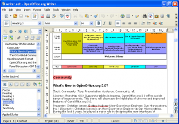
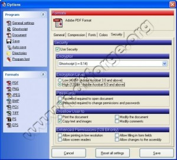
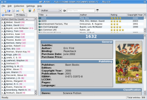
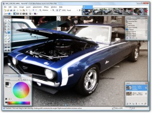
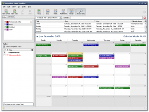
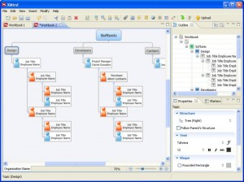
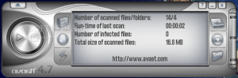
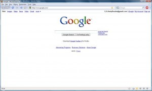
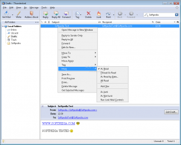

9 Essential Free Programs Every College Student Must Have
By Nate Desmond on April 15, 2009
One of the largest computer-related expenses is that of software. Owners of new computers often spend hundreds of dollars on their computer’s operating system, office suite, email program, calendar, and other programs. This does not need to be. Here are nine programs that you can use to outfit your computer – for free!
OpenOffice.org

OpenOffice.org is a basic office suite. In many ways, it is similar to Microsoft Office. In fact, you can even edit and create documents in the Microsoft Office format! This feature is especially useful if you need to submit college assignments in Microsoft Office format. In addition, you can easily create and edit PDF documents in OpenOffice.org. From what I have seen, it looks like Microsoft offers a plugin to add PDF capability, but Open Office comes with this ability by default. Finally, the best reason to get Open Office is the price – free. No purchase price, no yearly upgrade fee. I have used both Microsoft Office and Open Office, and, although I like Microsoft Office’s layout best, the price makes Open Office my first choice. Why not save $100 or more?
Download Open Office here.
Or, you could buy Microsoft Office here.
PDF Creator

PDF Creator is a user-friendly program with a simple purpose – create PDFs! The main advantage of this program is it’s simplicity. Once you download the software, it acts like a printer. Go to the print menu on any (or at least almost any) word processor and “PDF Creator” will be listed as a printer. When you “print” to it, the program will ask you few optional questions such as the title, author, and keywords. Click save, and your document is modified into a PDF document! In addition, you can choose to change more advanced options such as the encryption level, password protection, and user permissions. For more information read this tutorial explaining how to use PDF Creator.
Download PDF Creator here.
Tellico

This program is a bibliography/collection manager. You can use it to manage your bibliography for school. Using this program, you can easily archive all the bibliography information for all your books so that it is all at your fingertips…even after you return a book to the library. You can also use this software to manage your reading list. I have spent a long time trying to find a free program that would manage my reading list. After a lot of online searching, I gave up and decided that such a thing did not exist. However, while researching for this article, I found Tellico. This program is perfect for managing reading lists. In fact, you can even rate your favorite books using a star system! This program also has an information packet on what Tellico is and how to use it. [Update: I was just notified that Tellico does not work on the Windows platform. Hope they change that soon...]
Download Tellico here.
Paint.NET

Paint.NET is the premier free graphics program. This program was designed by college students as a class project. However, they did such a great job that it really took off! It has received favorable reviews in nearly every major online computer magazine. In addition, it has received funding from Microsoft. Many of it’s original designers were subsequently hired by Microsoft. Paint.NET has gathered a large, enthusiastic following. From what I can tell, this program is Microsoft’s “Paint” on steroids. If you are new to graphic design, these extra features will seem overwhelming at first, but, with a little practice, you won’t want to go back to a smaller graphic design program.
Download Paint.NET here.
Sunbird

Sunbird is a free calendar program created by the Mozilla, the same company that makes Firefox. I have not used calendars/planners very much in the past, but, if you do use a calendar, this might be the best option for you. In addition, you could use Mozilla’s Lightning, a calendar that is integrated with email. Both of these programs are downloads, not web apps. I prefer downloads because of news that I have heard about web applications and security issues.
Download Sunbird here.
Download Lightning here.
XMind

XMind is a free brainstorming and mind mapping program. This program can be useful for planning a class project, research paper, or your to do list. Simply visit the XMind website, click the “Download” button, and follow the easy installation process.
Download XMind here.
Avast: Home Edition

If you live on campus, you can probably get a internet security program, such as Norton, free from you college. If , however, you live off-campus or your college does not offer free internet security, you can download Avast: Home Edition for free. From what I can tell, it looks like this program includes anti-spyware and anti-virus software but does not include a firewall or internet controls (such as ad blockers).
Download Avast: Home Edition here.
Firefox

Firefox is the most-used web browser, even more than Internet Explorer. Why do so many people use Firefox? Well, there are many reasons. First, Firefox comes with many security functions. For example, it warns you if you try to visit a known malware site. In addition, this web browser makes it easy to clear all your private data – with one click. Also included in this browser is a pop-up blocker. The second reason people like Firefox is the add-on database. Many companies and individuals have created add-ons that will customize your Firefox browser and make it work better. For example, you can download an add-on called Adblocker Plus that will block most website’s advertisements. For a full feature list visit the Firefox website.
Download Firefox here.
Thunderbird Email

Thunderbird is an excellent open-source email program created by the makers of Firefox. The three main reasons to use this email program are the security, customization, and organization. This program comes with many security features including junk mail filtering, phishing protection, and privacy protection. In addition, the email program is highly customizable. Like Firefox, Thunderbird email comes with plenty of add-ons, extentions, and themes. Finally, this email program is useful for organization. You can easily color-code different types of messages and search all archived messages. Read the complete feature list here.
Download Thunderbird Email here.